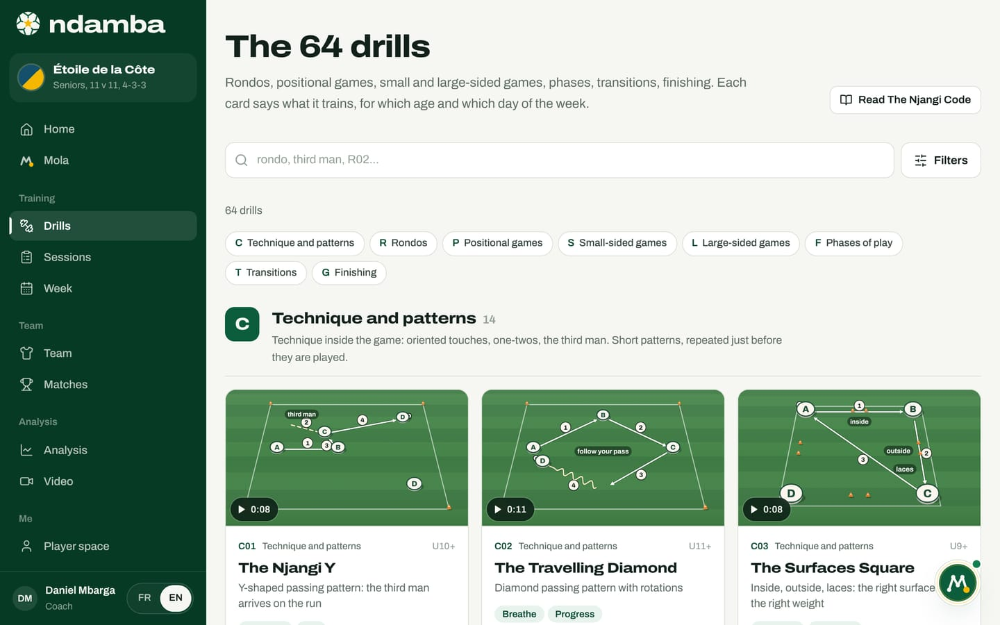
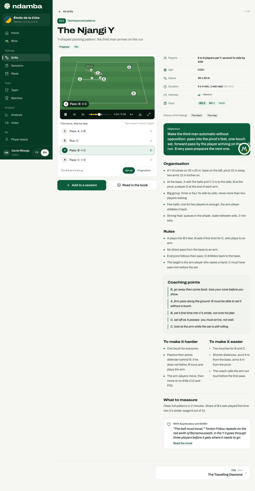

The library of 64 drills
The 64 drills of the Njangi method, sorted into eight families, with their intentions, ages, days and intensity. How to search, filter, read a drill card and send it into a session.
11 min read
A shared game model does not live in a speech. It lives in drills that everyone knows: a youth coach at an academy in Bafoussam, the assistant at a Ligue 1 club and the coach of a youth national team should all be able to say "we’re doing R08 today" and mean the same thing. That is what the drill library is for. It brings together the 64 drills of the book The Njangi Code, each one animated like a short video, with its rules and coaching points, on the coach’s phone at the side of the pitch. Each card says what it trains, for which age and for which day of the week. And the library stays open to everyone, on every plan, free of charge.
What the library holds
The 64 drills are sorted into eight families. Each drill has a code: one letter for the family, a number for its place. The code is the same in the book, in the app and in your sessions. It is what you type in the search box, and it is what appears on the printed session sheet.
| Letter | Family | Drills | What it trains |
|---|---|---|---|
| C | Technique and patterns | 14 | Technique inside the game: oriented touches, one-twos, the third man, in short patterns |
| R | Rondos | 8 | Keeping the ball in small numbers, the first school of the Njangi |
| P | Positional games | 10 | Occupying space with purpose: lanes, lines, the third man |
| S | Small-sided games | 8 | Small numbers, lots of touches: read, decide, score |
| L | Large-sided games | 6 | The game model on a big pitch, as close to the match as it gets |
| F | Phases of play | 6 | One precise phase of the match, repeated against real opposition |
| T | Transitions | 6 | Win it back within five seconds, look forward after winning it |
| G | Finishing | 6 | Get into the finishing zone and shoot with purpose |
Every drill also carries the same five markers, which then drive the filters:
- Intentions. These are the seven words of the method (chapter 2): the five intentions of possession, Build out, Progress, Pin, Finish and Breathe, and the two reflexes without the ball, Win it back and Look forward. A drill works on one, two or three of them, rarely more.
- Minimum age. "U12+" means from under-12s upwards. The drills range from U9+ to U15+. A drill stays useful for older players, with tougher rules.
- Days of the week. MD-4, MD-3, MD-2, MD-1, MD+1 or Youth: the days on which the drill naturally fits relative to the match (chapter 9 explains these codes).
- Intensity. Low, Medium, High or Very high, shown as four small bars, and spelled out on the drill card itself. The method is demanding: 37 drills are high, 22 medium, 3 low (technique drills) and 2 very high (two transition drills).
- Duration. Sets and rests, for example "4 x 4 min, 1 min rest", and the total in minutes, from 14 to 38 minutes depending on the drill.
Opening the library
- In the left-hand menu, under Training, tap Drills. On a phone, tap the More tab, then Drills.
- The page opens on the title The 64 drills and the counter "64 drills".
- Below the search box, a row of chips lists the eight families with their letters. Tap one to jump straight to that family.
- Each family starts with its letter, its name, its number of drills and one sentence on what it is for. The cards follow.


A card shows the essentials without opening it: the animation, the code, the family, the minimum age, the title, a one-line summary, the first two intentions, the duration in minutes, the number of players and the intensity. The animation rests on the finished move, like a video thumbnail, with its length in the corner (0:08). Move the mouse over it, or tap the play button on a phone, and the players start moving; tap again to stop. At the top right of the page, the Read The Njangi Code button opens the whole book.
Searching and filtering
The search box takes a code (R02), a word from the title ("rondo") or an idea ("third man"). It looks through titles, subtitles and objectives, in English and in French, and it ignores accents. If you type several words, a drill must contain all of them.
The Filters button opens five rows of chips: Family, Intention, Day, Age and Intensity. Each chip shows a small number: how many drills you would get by tapping it, given your other filters. A chip at zero fades out, so you never walk into a dead end. When you pick an intention, its definition appears just below, for example "Win it back: Five seconds of counter-press after losing the ball".
The Age filter works as a ceiling: the U11 chip keeps drills meant for under-11s and younger, never a "U13+" drill. The chips run from U9 to Seniors. Across rows, filters combine: an intention plus an age gives the drills that meet both. Within a row, they widen: two intentions show the drills that work on either one.
As soon as a filter is on, the families give way to a single grid with a counter, for example "7 drills found". The Filters button shows how many filters are active. Clear filters resets the chips but keeps your search; Show all drills resets everything.
Here is an example, taken from a real coaching question: "My team loses the ball and just watches the other side break away."
- Tap Filters.
- In the Intention row, tap Win it back. Seven drills remain.
- In the Age row, tap your team’s age, for example U13. Three remain.
- In the Day row, look at the numbers: these drills belong mostly on MD-4 and MD-3, far from the match, because they are high or very high in intensity.
The order of those steps is deliberate. The Njangi Code (chapter 31) tells coaches to choose a drill by asking three questions, always in the same order: which intention, which age, which day. The intention comes from the last match, and it already cuts the 64 drills down to about fifteen. The age protects children from drills that were not designed for them. The day decides the space and the intensity. Ndamba’s filters follow the same reasoning.
Reading a drill card
Tap a card to open it. Every card follows the same order, so you can find what you need in two seconds, even in the four o’clock sun.

The header. The code (C01), the family, the title ("The Njangi Y"), a line that sums up the idea, then the intentions. The five intentions of possession are in green; the two reflexes, Win it back and Look forward, are in grey. At the top right, a counter shows where the drill sits in the list, for example "1 / 64".
The animation. Every drill is played like a short video on a pitch seen from the stand. It starts by itself when the card opens, then loops: the players move, the ball travels, and each action leaves its line on the grass, numbered in the order of the play. A solid white line is a pass, a dashed line a run, a wavy line a carry, a thick orange line a shot, a dotted line a press. The team playing the Njangi way has white discs with a green rim, the opponents are red, neutral players or jokers are yellow, the goalkeepers dark blue or purple. When a run and a pass go together, the ball and the runner arrive at the same moment, as on the pitch: in C01, C sets off as B receives and takes the set-up in his stride.
A caption at the bottom of the picture names the step on screen ("3 · Pass: B → C"). Under the player, The move, step by step lists every step: tap one to watch it alone, as many times as needed. The bar below the picture holds the controls: play and pause, previous step and next step, the timeline with a mark for each step, 0.5× for slow motion, full screen and Download the video (MP4), a light file (about 70 KB) to send to your players on WhatsApp before training. The animation ends on the complete diagram: the starting positions, every line and the step numbers.
For 19 drills, a second animation shows the progression or the second phase: switch between them with Set-up and Progression. In the English edition, the words written on the pitch, such as "third man", are in English too.
The key facts. To the right of the diagram: Players (how many, and often how many groups side by side), Age, Space (in metres), Duration (the sets, then the total in minutes in brackets), Intensity and Days. Below them, the drill’s Pieces of the Njangi: the heart, the reason, the eyes, the map or the breath, the five images from the novel that help coaches talk about the game with children.
The content. Further down, the card gives its Objective in a green band, then the Organisation (cones, teams, balls; many drills also cover the case of a big group, too few balls and strong heat), the Rules, the Coaching points, meaning the short phrases to use during the drill, and two columns: To make it harder and To make it easier. The What to measure section says what to count to know whether the drill did its job. Finally, the With Kaydoudou and BriBri box links the drill to a scene from the novel, with a Read the novel link.


The coaching points are written the way you talk at the side of the pitch: "B, set it first time into C’s stride, not onto his feet." That is on purpose. The book insists that a moving player only hears one instruction at a time, and only if it is short. When every age group at a club uses the same words, an under-13 moving up to the under-15s does not have to learn a new language.
At the bottom of the card, two tiles lead to the previous and the next drill. The All drills link at the top takes you back to the list, filters included.
From the book to the pitch
Under the animation, the Read in the book button opens the same drill in The Njangi Code, on its own page. The book gives the context a screen has no room for: the chapter that explains the intention, the common mistakes, the drill’s place in the week. The book is written in French, like the novel.
The link works both ways: every drill the book mentions by its code, such as R08, is in the library, and the book’s table of contents ends with a link to the drills in the app (Les 64 exercices dans l’application, in French like the rest of the book). A coach prepares at home with the book and finds the same card in their pocket the next day.
Adding a drill to a session
A drill only matters once it reaches the pitch. The Add to a session button gets it there in two moves.
- On the drill card, tap Add to a session. A window opens with the drill’s title.
- For a new session, tap New session with this drill. The MD day and the intention are filled in for you: the day is the drill’s first pre-match day (MD-4 for R08, for example) and the intention is its first intention. Check the date and the team, then tap Create session.
- For a session that is already planned, pick it under Or in an upcoming session. The list shows up to twelve upcoming sessions for the team, with their MD day, number of blocks and minutes. Right day marks a session whose day matches the drill’s days; Already in marks a session that already contains the drill: it no longer responds to a tap, so the same block cannot go in twice.
- A message confirms the addition, with an Open link to go to the session.
The drill joins the session as a new block at the end, with its full duration. Chapter 8 shows how to move it, change its minutes or add a note.
You can also go the other way. From a session, the Add a drill button opens the same library, already filtered on the session’s day (except for MD+1, which has a single drill: the panel then shows every drill). At the bottom of the library, the Build a session with these drills link leads to your sessions. And if you would rather ask, Mola answers questions like "Which drills to win the ball back faster?" with three drills suited to your team’s age.
What the library builds
A library does not make a team. But a team that knows ten drills by heart no longer spends time working out the organisation: all its attention goes to behaviour. The book puts it simply: better ten well-known drills than something new every day. Ndamba makes those drills common property, in one place, with the same codes and the same words, from under-9s to the first team. It is the first brick of the continuity African football has been missing.